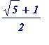
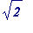

Some well-known algebraic numbers
Certain quadratics: The golden ratio  , and 
Complex roots of unity
Certain values of the j( z )-elliptic modular function
Conway's Look-and-Say algebraic number
Contact details
After August 31st 2007 please use the following Gmail address: jbcosgrave at gmail.com
This page was last updated 18 February 2005 15:09:55 -0000